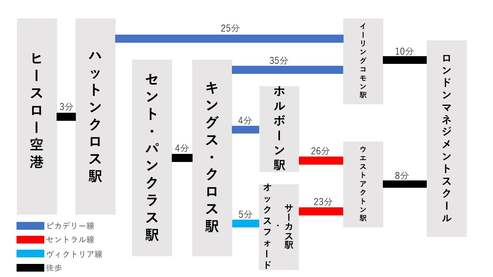

アクセス
交通機関でお越しの方へ
ロンドン西部イーリング・ロンドン特別区であるアクトン(Acton)に位置。ロンドン中心部から およそ45分の場所に立地。この地域は治安が非常によく、日本人も多数住んでいます。
| ロンドン中心地から | セント・パンクラス駅(St. Pancras)から徒歩4分キングス・クロス駅(King's Cross)より ピカデリー線(Piccadilly Line)でイーリングコモン駅(Ealing Common)まで |
|---|---|
| セント・パンクラス駅(St. Pancras)から徒歩4分キングス・クロス駅(King's Cross)より ピカデリー線(Piccadilly Line)でホルボーン駅(Holborn)まで。 セントラル線(Central Line)に乗り換えウエストアクトン駅(West Acton)まで | |
| セント・パンクラス駅(St. Pancras)から徒歩4分キングス・クロス駅(King's Cross)より ヴィクトリア線(Victoria Line)でオックスフォード・サーカス駅(Oxford Circus)まで。 セントラル線(Central Line)に乗り換えウエストアクトン駅(West Acton)まで | |
| 空港から | ヒースロー空港から徒歩3分ハットンクロス駅(Hatton Cross)より ピカデリー線(Piccadilly Line)でイーリングコモン駅(Ealing Common)まで |
